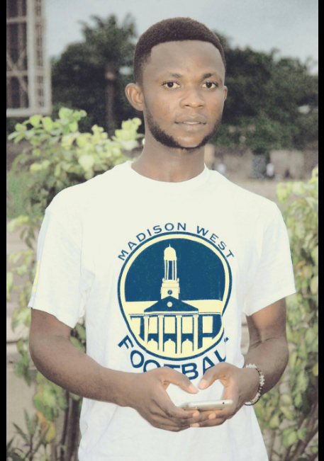

De l'université de kinshasa je suis en L2 LMD dans le département de mathématique, statisque et informatique. Mon nom est Pedro Omekenge Tshungonion, je suis né le 25/05/1997 d'une famille de 9 enfants; Engendré par Mr Omekenge et Mdm Regine Akoka.
voici la liste des mes frerès et soeurs:
- Andre
- Denis
- Pedro (moi)
- Naomie
- Dorcas
- Marie
- Esther
- Gilbert
- Sarah
la famille Reside dans la Commune de N'djili Quarier 12 numéro 63 Avenue Mazi, je suis du Message de branaham.
mon cursus scolaire se présente de la manière suivante: de première année à ma sixième année des humanité litteraire, je les passé au lycée Saint Germain et mon parcours Academique je le fait à l'Université de Kinshasa.